Help › Troubleshooting and known limits
Working as a team on several computers
Share a project on Door43, then each teammate opens it from Door43 and uses Sync with Door43 to swap work.
Once a Bible or Open Bible Stories project is on Door43, teammates can each work on their own computer and swap changes with Sync with Door43.
Start sharing (project owner)
- On the Home screen, select Share on Door43 on the project card and follow the steps. See Share to Door43.
- On Door43, give each teammate write access to the repository. Teammates can't sync without it.
- The card now says On Door43 and Shared at the repository, and its button changes to Sync with Door43.

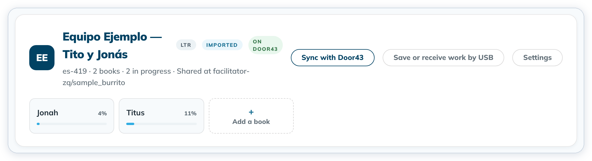
Join a project (teammate)
- Select + Add a project, then Open a project from Door43.
- Type
owner/repository, or paste the link to the repository, and click Open project. A private repository opens after you sign in to Door43. - If the internet is off, tC4 asks first. Click Turn on internet; Not now gets nothing.

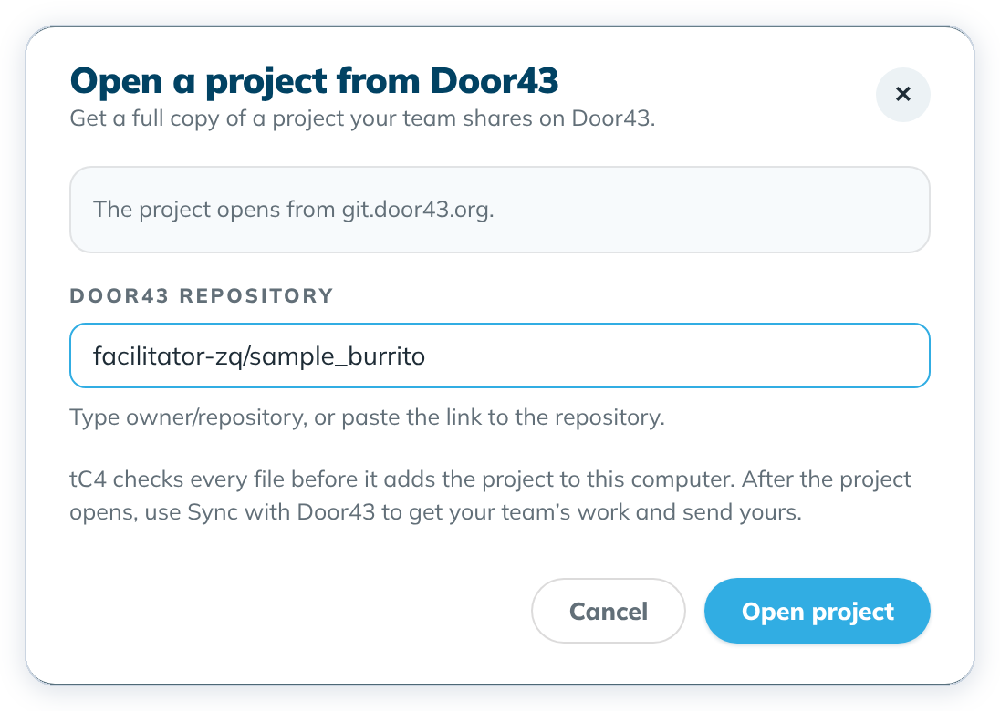

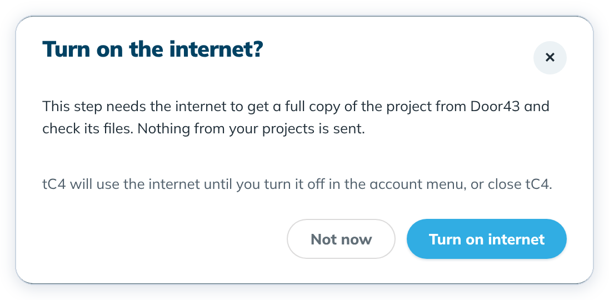
The project keeps the name the team gave it; tC4 doesn't ask for one. tC4 checks every file before it adds the project.
A project uses exact versions of its source texts and helps. If some of them are not on your computer, tC4 downloads them first, and the dialog names each one, for example Downloading en_tn v91, which this project uses. Versions left after this one: 8. A bar under it shows how far that version has come. Click Cancel to stop: the dialog says The open was cancelled. No project was added to this computer.

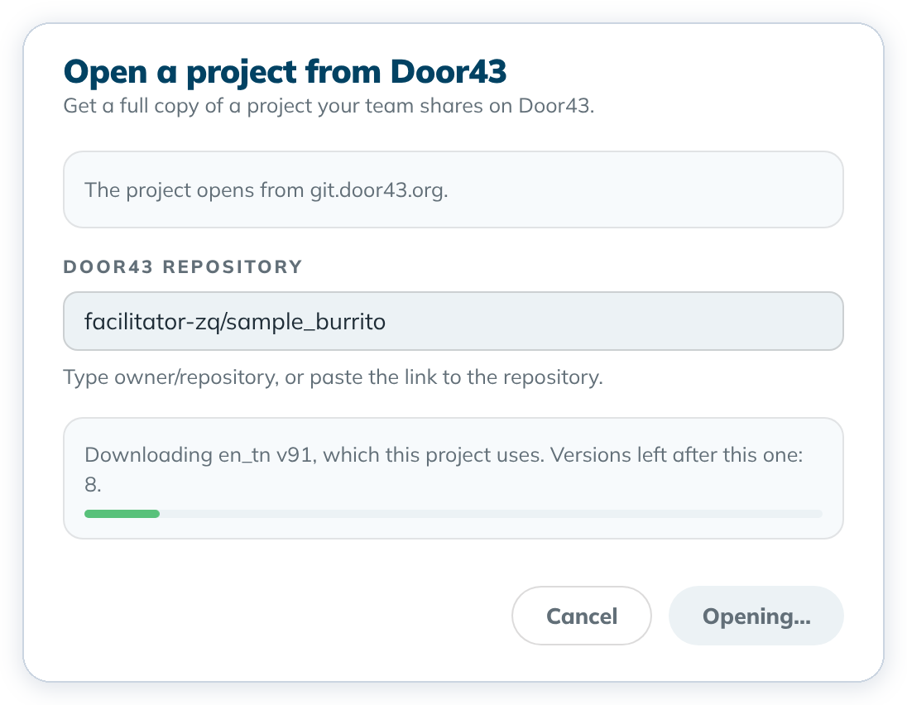

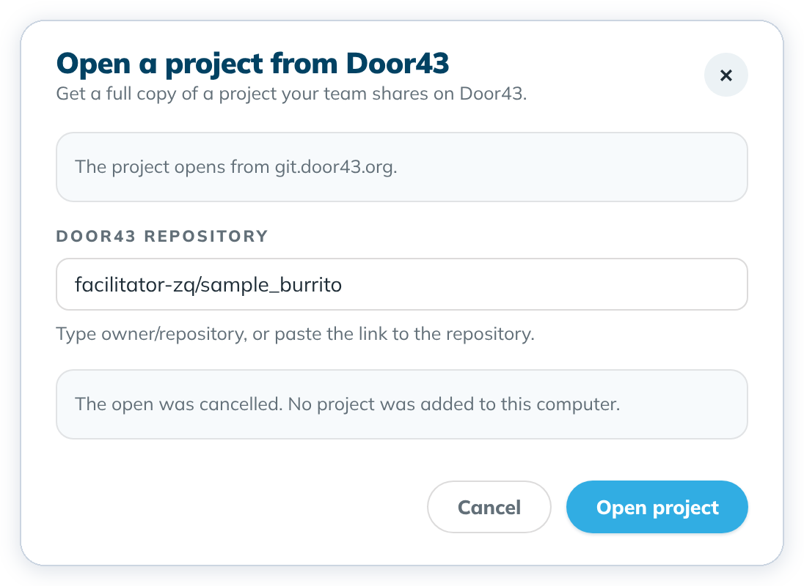
- If the project is already on this computer, the dialog says You already have this project on this computer. A project has one copy on each computer. Click Open it.
- If Door43 doesn't have a version the project uses, or it can't be downloaded, the dialog says This project cannot be opened. and names the version, for example Door43 does not have en_ult v91, which this project uses. No project is added. Click Ask for help if it keeps happening.

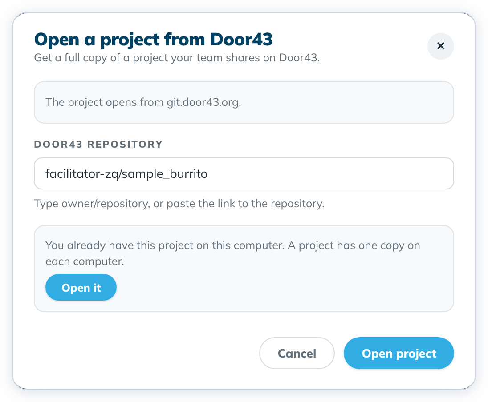

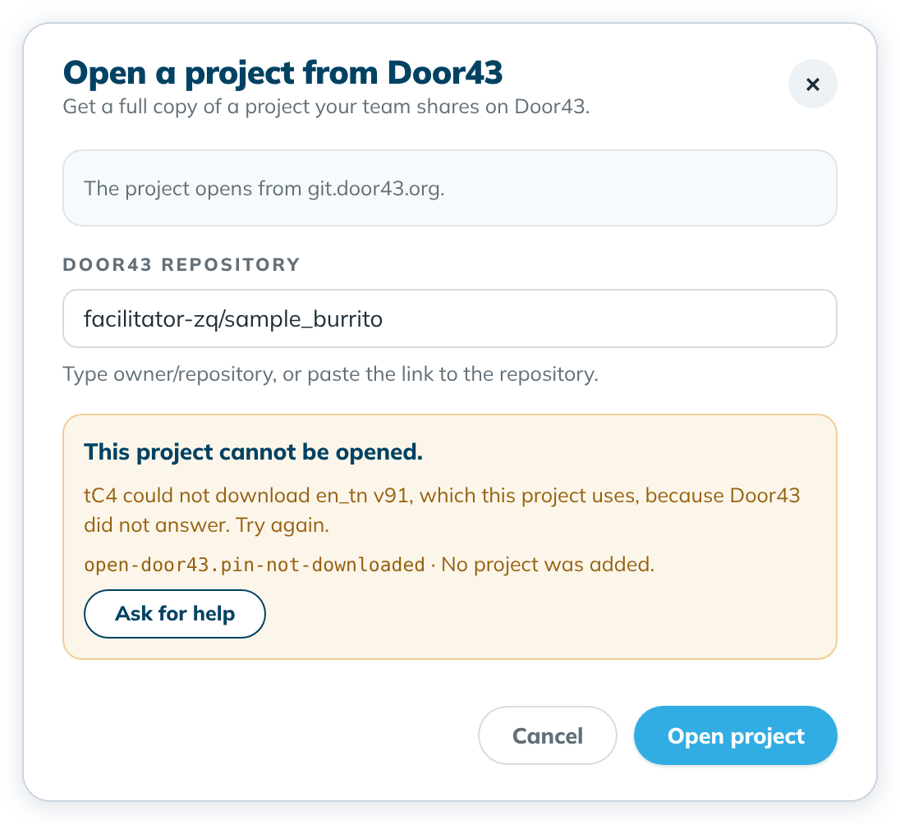
Sync
Select Sync with Door43 on the project card. The result says how many changes came from teammates and how many conflicts kept the newest version. If a teammate aligned the same verse after you did, the result names it, for example Titus 1:1: Ana's alignment replaced yours. Your links for that verse go back to the word bank. Open the verse in Align to check it. Nothing is merged automatically.

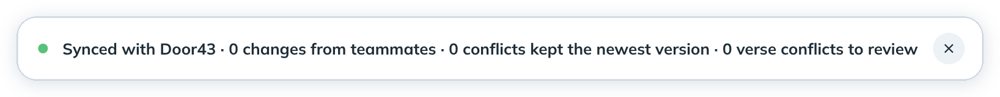
If the internet is off, tC4 asks first. Not now sends nothing. If you aren't signed in, tC4 asks you to sign in to Door43.
Versions the project uses
A teammate may have moved the project to a newer source text or helps version, or this computer may not have one of the versions the project uses. Once the sync is done, tC4 downloads each version this computer lacks, with no question. While it downloads, the project card says, for example, Downloading es-419_twl v18, which this project uses. Versions left after this one: 4. A bar and Cancel download are beside it.

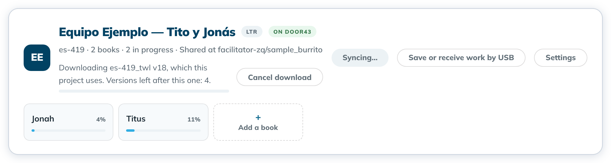
- The sync counts even if you cancel the download or a version can't be downloaded. Your changes were sent, and your teammates' changes were received.
- The result then says how many versions the project uses that are not on this computer, and why. For example, it says You cancelled the download of the versions this project uses. Or it names a version Door43 lacks: Door43 does not have es-419_tw v37, which this project uses. If one version can't be had, tC4 still downloads the others.
- Click Download in the result to get them now, or sync again later. The next sync downloads what is still missing.
- If the internet is turned off during the download, the download stops and the result says so.

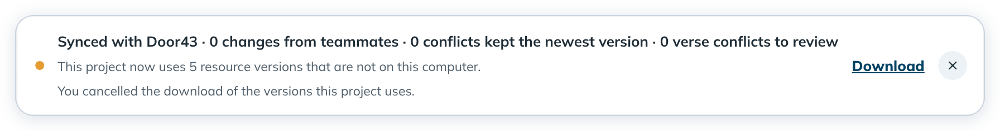

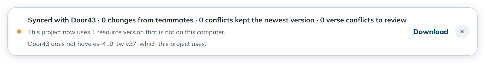
Story frame conflicts
On Open Bible Stories projects, sync can find frames that two teammates both changed.
- The sync toast reads 1 frame conflict to review (or the count) with a Review link.
- The Home story card and the Translate top bar show an amber 1 conflict · Review chip.

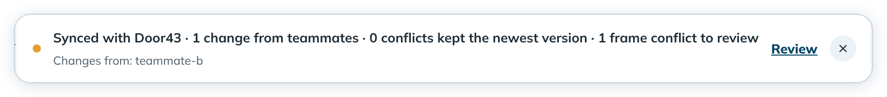

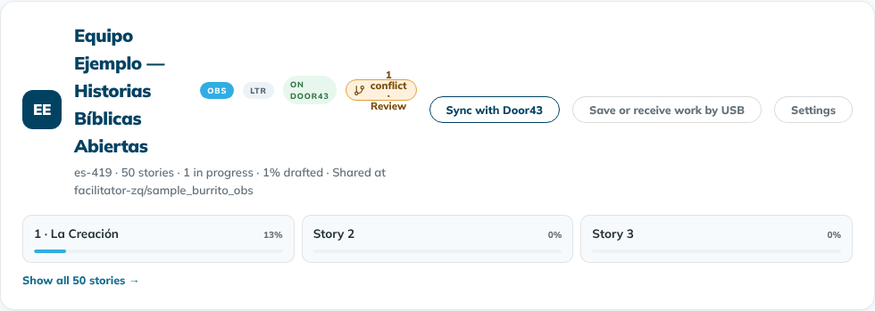
Project format and repaired files
- If a teammate's newer translationCore saved the project in a format this version cannot save to, sync stops and the toast names their format (for example 1.4 or 2).
- If
format.jsonwas deleted or damaged on Door43, tC4 puts this computer's copy back and the toast adds: A project file was deleted or damaged on Door43, so tC4 put your copy back.

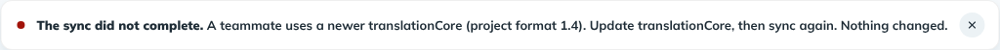

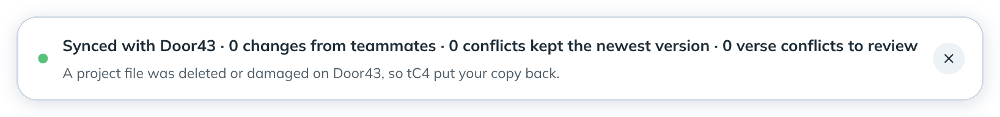
Good to know
- Bible and Open Bible Stories projects open and sync the same way.
- Don't copy project folders between computers by hand. tC4 refuses to open them, to protect the project.